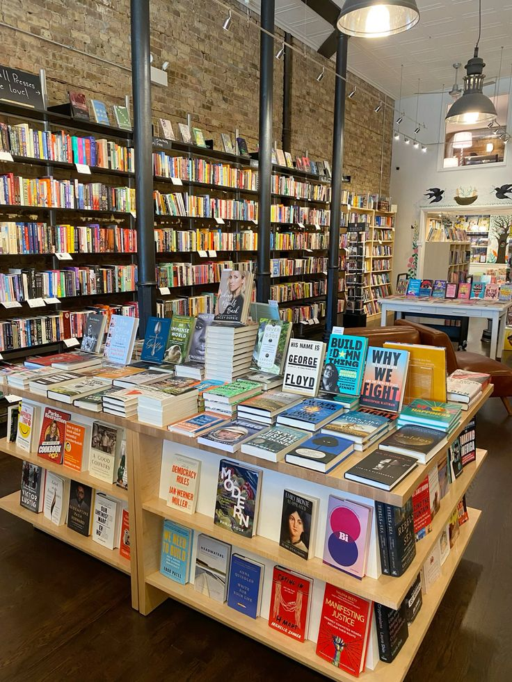

Nuestro Comienzo
BookStore empezo en el año 2015, un pequeño negocio de libros que surgió de la pasión por compartir historias.Comenzamos con una modesta selección de títulos, desde los clásicos hasta las últimas novedades, pero lo que nos distinguió desde el principio fue nuestro compromiso con cada lector que cruzaba nuestra puerta. Creíamos, y aún lo hacemos, que cada libro tiene un lector esperando por él, y nuestro trabajo es hacer que se encuentren.
Con el tiempo,ampliamos nuestra colección para incluir libros de autores locales, géneros poco comunes y obras en varios idiomas. Creamos un rincón especial para los niños, lleno de coloridas historias para inspirar a los más jóvenes, y organizamos eventos donde escritores y lectores pudieran compartir experiencias.
Hoy, nuestro negocio sigue fiel a su esencia: ser un lugar de encuentro para los amantes de los libros. BookStore es mucho más que una librería, es un refugio para aquellos que buscan descubrir nuevas ideas, revivir viejos recuerdos o simplemente disfrutar del placer de una buena lectura.

Equipo de trabajo
Nuestros principios
Valores
Compromiso con la comunidad
Apoyamos a nuestra comunidad local organizando eventos culturales, promoviendo autores locales y trabajando en colaboración con escuelas y bibliotecas.
Diversidad
e Inclusión
Nos comprometemos a ofrecer una selección diversa de libros que representen diferentes culturas, voces y perspectivas, y a ser un espacio inclusivo para todos los lectores.
Sostenibilidad y Responsabilidad Social
Nos esforzamos por reducir nuestro impacto ambiental, apoyando a editoriales responsables y promoviendo el intercambio de libros de segunda mano.